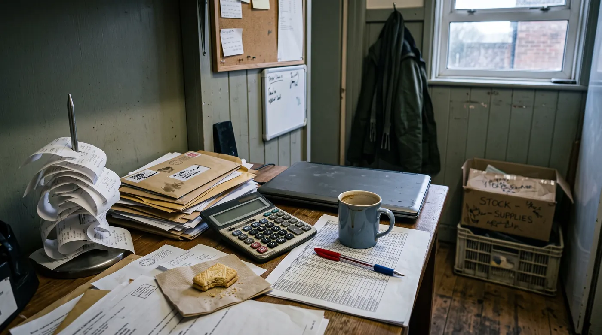

The £90,000 VAT Threshold: What UK Shop & Café Owners Actually Need to Do
If your till roll has been creeping toward £90,000 a year and you've started doing anxious maths on the bus home, this is for you. The VAT threshold catches out a huge number of small shops and cafés, not because the rule is secret, but because turnover (not profit) is what counts, and busy periods sneak up on you. Here's the blunt version: what the threshold actually is, the deadline you can't miss, what changes the day you register, and whether it's actually worth trying to stay under it.

The blunt answer
Once your taxable turnover for any rolling 12 months goes over £90,000, you must register for VAT with HMRC within 30 days of the end of that month. From your effective date of registration, which gets backdated, you have to charge VAT on your sales and can reclaim VAT on your own purchases. There's no grace period for "I didn't realise," so the moment you're close, start checking your rolling total monthly, not annually.
Notice that word: turnover, not profit. A bakery doing brisk trade on thin margins can sail past £90,000 while barely making a living, and still be legally required to register. That mismatch is exactly why so many owners get blindsided.
How the £90,000 threshold actually works
The threshold isn't a tax-year figure, it's a rolling 12-month total that you have to check continuously. Add up your VAT-taxable sales for the last 12 months, on any given day, and if that total is over £90,000, you've crossed the line, even if it happened mid-month and even if a single unusually good week pushed you over.
There's a second, separate test that trips people up: if you expect your turnover in the next 30 days alone to exceed £90,000 (say, you've just landed a big catering order or a wholesale account), you must register immediately, not wait for the rolling 12-month total to catch up. Owners who only watch the annual figure miss this one.
There's also a deregistration threshold, currently £88,000, for businesses already registered whose turnover has genuinely dropped and wants to come back out of the VAT system. It's a separate decision with its own paperwork, and it's optional, not automatic.
The 30-day deadline (and why it's tighter than it sounds)
You must notify HMRC within 30 days of the end of the month in which you went over the threshold. Your effective registration date is then set as the first day of the second month after that. In practice, that means by the time you've registered, VAT is already due on some sales you made before you'd even filed anything, which is the part that catches owners off guard.
One UK Business Forums thread that comes up again and again is essentially "can anyone explain the VAT threshold to me and how it's fair", and the honest answer is: it's not designed to feel fair to the business sitting right on the line, it's a fixed administrative cliff-edge that applies to everyone the same way. The fairness argument won't get you out of the deadline, so it's better spent on deciding your strategy well before you get close.
What actually changes once you're registered
Three things change immediately, and they matter in a different order than most owners expect.
1. You charge VAT on what you sell
Most goods and standard hospitality sales carry the standard rate; some items (a lot of unprepared food, for instance) are zero-rated, and the line between "hot food to go" and other categories has genuinely tripped up cafés and takeaways before, so check your specific product mix rather than assuming. Either your prices go up, or your margin absorbs the difference. There isn't a third option.
2. You can reclaim VAT on your own costs
This is the upside nobody mentions in the panic: stock, equipment, and other VAT-bearing business costs become partly reclaimable. For a business that's been paying VAT on ovens, fridges or fit-out costs without being able to get any of it back, this can genuinely soften the blow.
3. You must keep digital records and file through Making Tax Digital
Every VAT-registered business has to keep its records digitally and submit VAT returns through software recognised by HMRC as Making Tax Digital compatible, not by typing numbers into a web form by hand. This applies from your very first return. Before that return is due, check that your till system, bookkeeping app, or the software you connect it to is actually on HMRC's compatible list, spreadsheets alone generally aren't enough unless they're linked through approved bridging software.
Staying under it on purpose: is it worth it?
This is the question that actually drives most of the forum threads on this topic, more than the mechanics of registering. And plenty of small business owners do manage their trading pattern specifically to avoid crossing £90,000. A seasonal café might time its opening and closing dates around the number. A shop might trim its opening days. There's even a well-known example of a fish and chip shop that closes for several weeks a year, framed as "annual holidays", partly to keep turnover under the line.
None of that is illegal. You're allowed to decide how much you trade. It only becomes a problem if you artificially split one business into two or more separate entities purely to keep each one under the threshold while they're really operating as a single business, which is a specific form of avoidance HMRC actively looks for and can unwind, backdating the VAT as if you'd never split at all.
The real question isn't "is it legal", it's "is it worth it for you". If your customers are mostly members of the public who can't reclaim VAT, registering effectively makes you 20% more expensive than an unregistered competitor, or costs you that 20% out of your own margin if you hold your prices. For a business selling largely to the public on tight margins, deliberately staying a little under the threshold, by choice, with eyes open, is a legitimate business decision some owners make. For a business already close to £90,000 and growing, treating the threshold as a wall to avoid forever usually just delays an inevitable, and increasingly awkward, conversation.
Should you register early, voluntarily?
You don't have to wait until you're forced. Voluntary registration, below the threshold, makes sense for some businesses and is a poor idea for others, and the deciding factor is almost always who buys from you.
- Selling mainly to VAT-registered businesses (wholesale, trade accounts, B2B catering): registering often costs you nothing, because your customers reclaim the VAT you charge anyway, and you get to reclaim VAT on your own purchases. Some owners register early purely for this reason, and because it can look more established to bigger trade customers.
- Selling mainly to the public (a corner shop, a café, a hair salon): the public can't reclaim VAT, so registering early usually just means charging more or eating the cost sooner than you legally have to, with no offsetting benefit unless your own reclaimable costs are unusually high.
There isn't a universal right answer here. Get an accountant to run your actual customer mix and cost base through the numbers before deciding either way.
What if you've already gone over without noticing?
It happens more than owners like to admit, a busy quarter, a big one-off order, a slow realisation while doing the books months later. "Help, I didn't realise I'd gone over the VAT threshold" is a genuinely common post on accounting forums, and panicking doesn't help.
The practical reality: HMRC will still expect VAT on everything you sold from the date you should have registered, even though you weren't charging it at the time, which usually comes straight out of your own margin rather than the customer's pocket, because you can't retroactively add VAT to a sale that's already happened. There's also a genuine late-registration penalty on top, and how severe it is depends on the specifics: how long the delay was, and crucially, whether you come forward and disclose it yourself before HMRC finds it. If you think you're already over the line, the single best move is getting an accountant to help you make a voluntary disclosure properly, rather than guessing at numbers or hoping it goes unnoticed.
How to actually keep an eye on this, without a spreadsheet obsession
The owners who get caught out aren't the careless ones, they're the busy ones. The fix isn't more paperwork, it's making the number visible without extra effort.
- Check your rolling 12-month total monthly, not just at year-end. A calendar reminder on the first of the month takes thirty seconds.
- Use a till or POS that gives you a real-time turnover figure rather than reconstructing it from paper receipts once a quarter.
- Flag the forward-look test, if you've just taken on a big order or a new wholesale account, do the 30-day-ahead sum immediately, don't wait for the rolling total to catch up.
- Talk to an accountant before you're at £85,000, not after you're at £91,000. There's far more room to plan (structure, timing, voluntary registration) with a few months' notice than with a few days'.
This is really the whole game: the threshold only becomes a crisis when it arrives as a surprise. Whatever till system you're already using, Zettle, SumUp, Square, Epos Now, or something else, the single most useful habit is glancing at your real turnover figure regularly rather than only at tax time.
digabloPos
digabloPos isn't VAT software, and it's worth being upfront about that, so still check with your accountant that whatever bookkeeping tool you pair it with is on HMRC's Making Tax Digital compatible list. What it does give you is a live, accurate turnover figure on your phone or tablet, from the free-forever base plan, with no forced payment commission eating into the margin you'll need once VAT starts applying to your prices. Its offline mode with auto-sync also means a dropped connection at the till doesn't leave a gap in your sales records, which matters when that record is exactly what you (or your accountant) need to check monthly.
👍 Why it fits this situation
- Free forever, no cost just to see your own turnover
- No forced commission, so it doesn't eat further into thinning margins
- Real-time sales visibility, check your rolling total anytime
- Offline mode with auto-sync, no gaps in the record
- Per-employee discount limits, so staff can't quietly discount sales below what you're tracking
👎 Honest notes
- Not accounting or VAT-filing software, you'll still need MTD-compatible bookkeeping tools alongside it
- Newer brand in the UK than Zettle, SumUp or Square
- You arrange your own card reader/processor separately
See your real turnover, before HMRC has to tell you about it
Set up a free register in about 5 minutes and always know exactly where your rolling 12-month total stands.
Create my free register, 5 minMistakes owners keep making
- Watching profit instead of turnover. The threshold is about total taxable sales, not what you take home. A thin-margin business can cross it fast.
- Only checking once a year. The rolling 12-month total needs a monthly glance, not an annual one.
- Missing the 30-day forward-look test after landing a big order or new account.
- Assuming "free" software or a card reader tracks turnover the way HMRC needs it tracked. Check your MTD compatibility before your first VAT return is due, not the week it's due.
- Freezing instead of planning. Whether you choose to stay under, register voluntarily, or accept you'll cross it, deciding early beats being forced into a decision by a surprise number.
FAQ
What happens if I go over the VAT threshold?
You must register for VAT with HMRC within 30 days of the end of the month in which your rolling 12-month turnover passed £90,000. Your effective registration date is backdated to the first day of the second month after you went over, so you can owe VAT on sales made before you'd even finished registering.
Can I deliberately stay under the VAT threshold?
Yes, plenty of small shop and café owners manage their trading pattern, hours, or seasonal opening, specifically to stay under it, and that's legal. It becomes a problem only if you artificially split one business into several separate entities purely to dodge registration, which HMRC treats as avoidance and can unwind.
Should I register for VAT voluntarily before I have to?
It depends who buys from you. If most customers are VAT-registered businesses that reclaim the VAT you charge, voluntary registration often costs you nothing and lets you reclaim VAT on your own purchases. If you sell mainly to the public, registering early usually just means charging more, or absorbing the cost, sooner than the law requires. Get an accountant to run your specific numbers.
What is Making Tax Digital for VAT?
The requirement that every VAT-registered business keep digital records and file VAT returns through HMRC-recognised software, rather than typing figures into a web form. It applies from your very first VAT return regardless of turnover, so confirm your till or accounting software (or a connected bridging tool) is on HMRC's compatible list before that return is due.
What happens if I register for VAT late?
HMRC still expects VAT on everything sold from the date you should have registered, even though you weren't charging it at the time, which usually comes out of your own margin. There's also a genuine late-registration penalty, with its severity depending on the circumstances and whether you disclose it yourself first. If you think you're already over the line, get an accountant to help you disclose it properly rather than guessing.